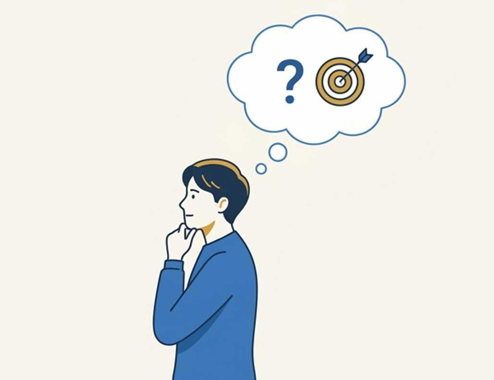

读《关键对话》· 把最难开口的话，说到对方心里
先看清，我们正身处怎样的沟通困境。
习惯了 15 秒的即时爽感，越来越没耐心听完一段完整的话。
打字全靠拼音联想，离开输入法，很多常用字突然写不出来。
“哈哈哈”和表情包，正替代我们说清楚真实想法的能力。
我们越来越会“刷”，却越来越不会“谈”——可真正影响关系和人生的，恰恰是那几场“关键对话”。
一本沟通圣经，专治高难度对话。
双方看法相左，谁也说服不了谁。
一开口就上头，容易带情绪。
结果影响关系、利益或前途。
当这几点交织在一起，一次普通交流就变成了“关键对话”——谈加薪、和伴侣商量一笔大开销、给好朋友提一个难听却重要的建议……越是这种时刻，越考验我们怎么说。
直接取自书中的四个核心步骤，即学即用。

人一旦感到不安全，要么沉默（不说了），要么爆发（吵起来）。先给足安全感。
我们常把“我看到的”和“我认为的”混为一谈。事实让人接受，评判让人对抗。
把读到的，变成做到的。
我们无法回避那些关键对话，
能选择的，只是把它谈好，还是谈砸。
愿我们都能，把最难开口的话，说到对方心里。